PIXELCRAFT visual quality audit · 2026-11-10T06:54:25+00:00 · method pixelcraft-1.0
GITCRAFT 3D Department UI (/)
/home/user/GITCRAFT/gitcraft-out/uiwt/forgecraft/ui/dist
resolved 15 · new 0 · regressions 0 · coverage lost: spacing.evenness (home @ landscape), spacing.evenness (home @ tablet) · details at the end of the report
Confidence: only automatic journeys (no task-specific journeys with expected taps); canvas-rendered screens: the DOM does not describe what is drawn; browser emulation only (no physical-device evidence). Coverage and confidence are separate from quality; nothing is capped or awarded for code existing.
2 · Category scores
| Category | Area | Points | Awarded | Weakest metric | Evidence |
|---|---|---|---|---|---|
| Visual Quality | Spacing and rhythm | 25 | 20.5 | related elements evenly spaced · 53% | measured ×127 |
| Visual Quality | Layout and composition | 25 | 25 | no horizontal overflow · 100% | measured ×237 |
| Visual Quality | Typography and hierarchy | 20 | 17.9 | a small set of font sizes · 65% | measured ×144 |
| Visual Quality | Buttons and controls | 20 | 19.2 | one clear primary action per group · 73% | measured ×161 |
| Visual Quality | Visual consistency | 10 | 10 | controls share radii and a small palette · 100% | measured ×66 |
| Usability | Interaction efficiency | 25 | 25 | journeys complete · 100% | measured ×20 |
| Usability | Navigation and discoverability | 20 | 16 | navigation stays in the same place on every screen · 0% | measured ×19 |
| Usability | Mobile ergonomics | 25 | 25 | responsive viewport meta · 100% | measured ×135 |
| Usability | Feedback and interaction states | 15 | 14.7 | controls react to hover · 88% | measured ×38 |
| Usability | Accessibility | 15 | 15 | axe-core WCAG 2.2 AA checks · 100% | accessibility ×36, measured ×12 |
| Consistency | Cross-screen consistency | 25 | 4.8 | primary buttons look the same on every screen · 15% | measured ×12 |
| Consistency | Component consistency | 25 | 19.8 | inputs share one height · 70% | measured ×12 |
| Consistency | Responsive consistency | 20 | 19.7 | the same content at every size · 96% | measured ×12 |
| Consistency | Design system adherence | 20 | 10.1 | a small set of corner radii · 6% | measured ×24 |
| Consistency | State consistency | 10 | 9.7 | hover treatment applied consistently · 92% | measured ×4 |
3 · Strongest screens
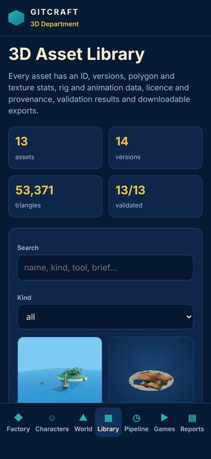
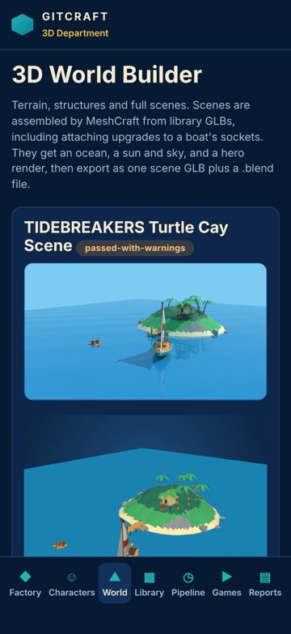
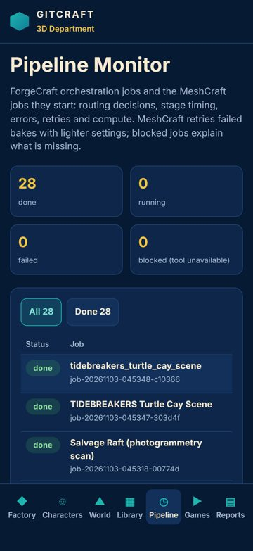
4 · Weakest screens
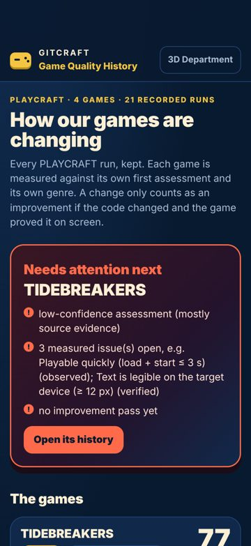
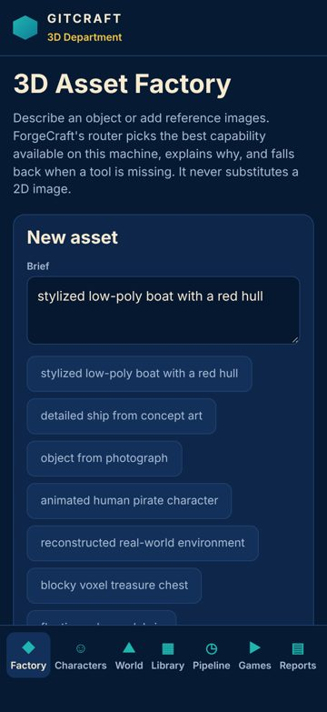
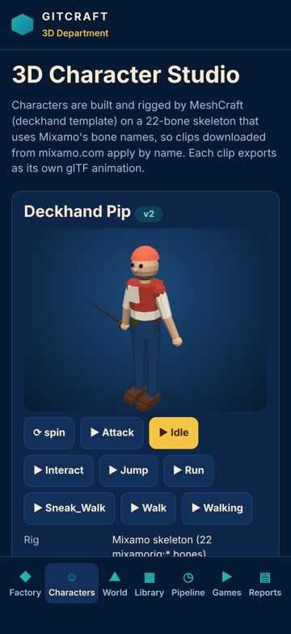
5 · Critical usability defects
None found.
6 · Spacing and layout defects
Uneven spacing between related elements
major Measured (rendered DOM)seen 4×fix now
Items of the same kind in one list or stack are separated by different gaps, which reads as grouping that isn't there and makes the list look broken.
Fix: Give the container one gap (flex/grid `gap`, or one margin rule for all items) instead of per-item margins.
Where and what was measured
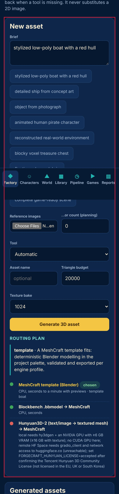
Lines of text are too long
minor Measured (rendered DOM)seen 1×polish
About 101 characters per line; beyond ~80 the eye loses its place.
Fix: Cap text columns at 60-75ch (max-width: 70ch).
Where and what was measured
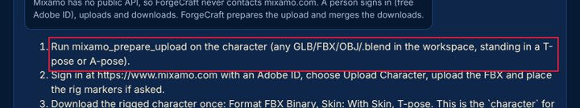
7 · Button and control defects
Two primary actions compete
minor Measured (rendered DOM)seen 3×next
'Interact' and 'Jump' are both strongly filled, similar in size and side by side, so neither reads as the main action.
Fix: Keep one filled primary button per group; make the other secondary (outline or tonal).
Where and what was measured
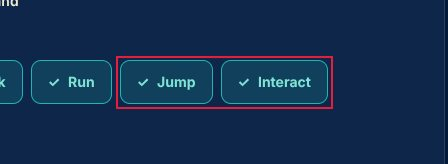
No hover state
minor Measured (rendered DOM)seen 1×polish
The pointer over this control changes nothing (colour, shadow, underline), so it does not signal that it is clickable.
Fix: Add a hover style (tone shift, underline, elevation) for every interactive component variant.
Where and what was measured
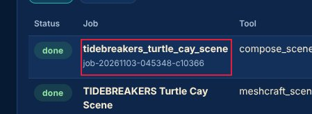
8 · Mobile-specific findings
None found.
9 · Screenshot gallery
Browser emulation (Playwright + Chromium; iPhone safe areas emulated through CDP). No physical-device evidence was supplied.
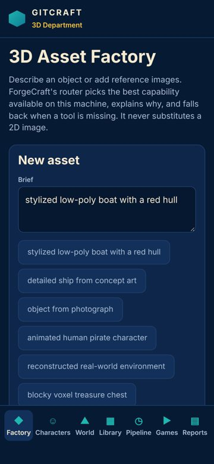
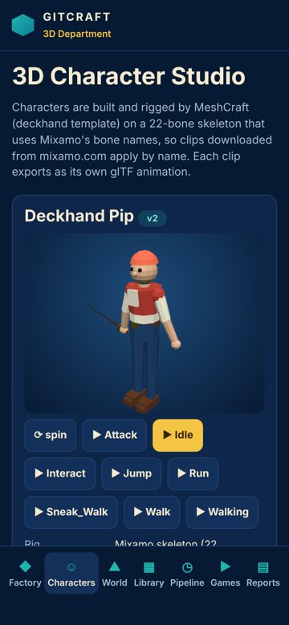
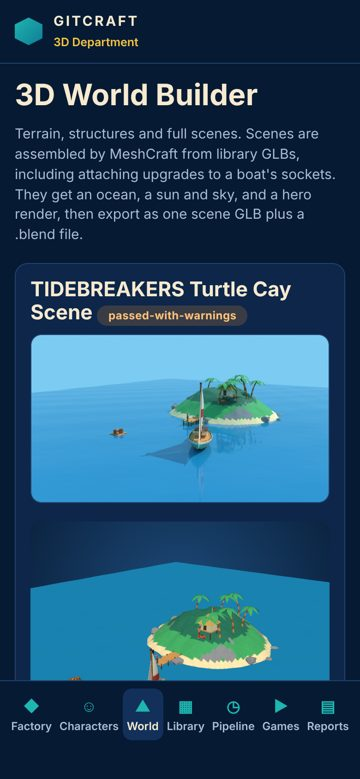
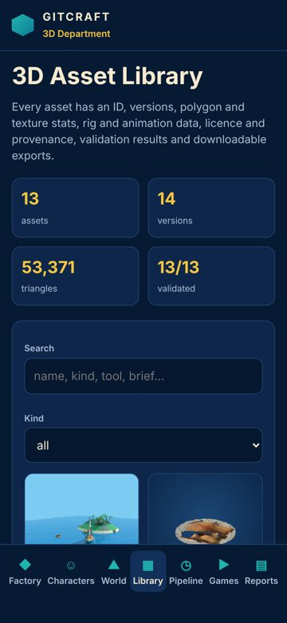
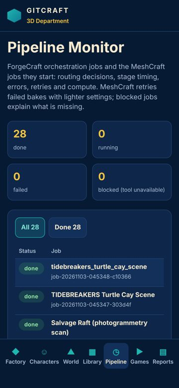
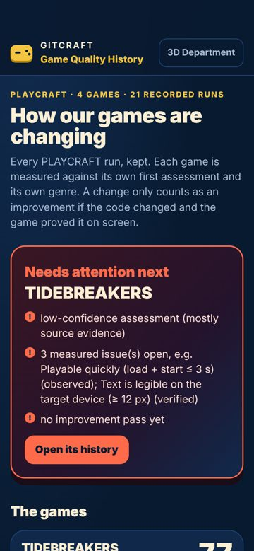
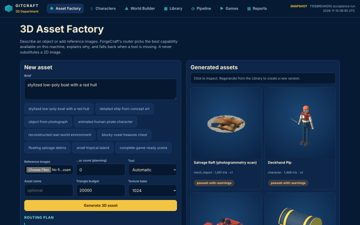
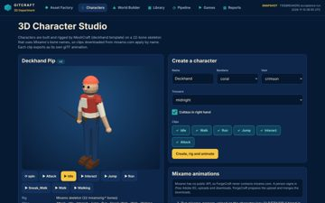
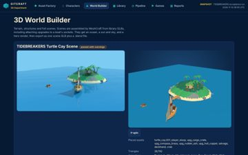
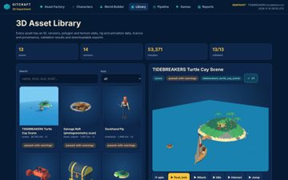
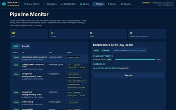

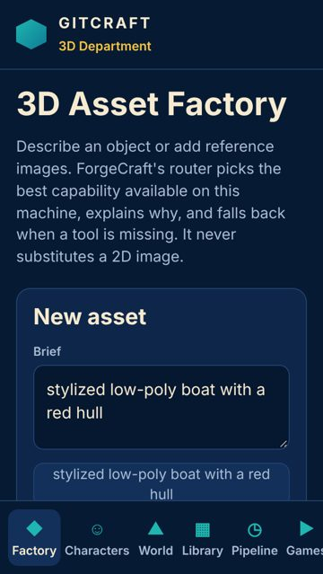
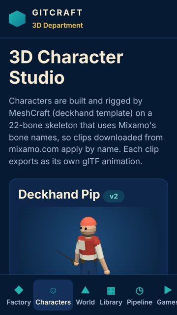
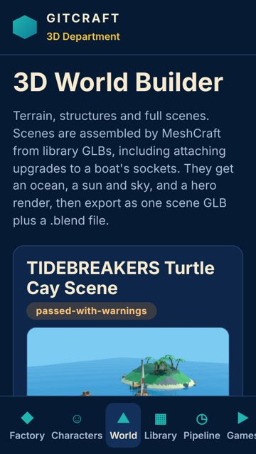
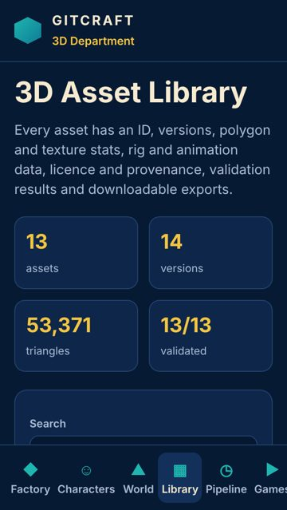
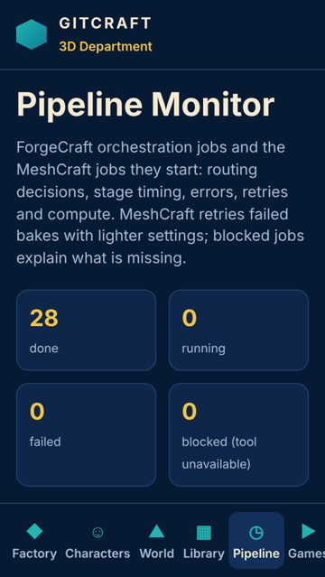
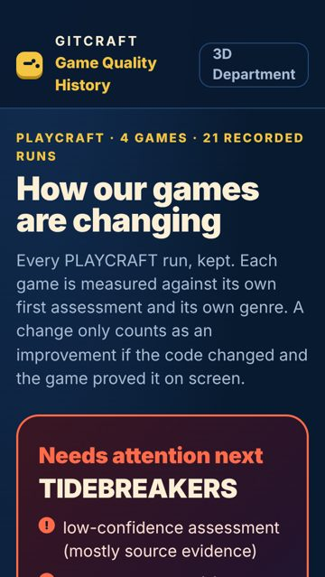
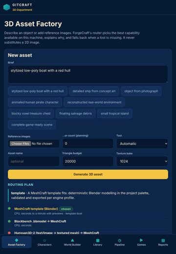
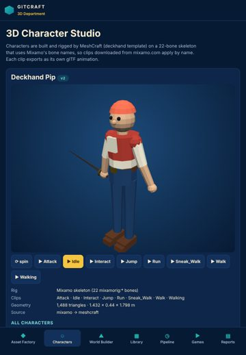
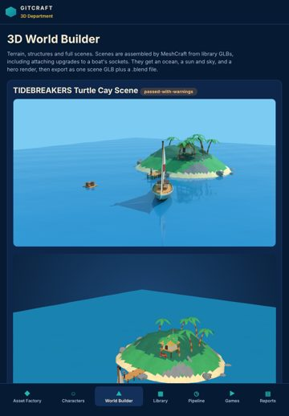
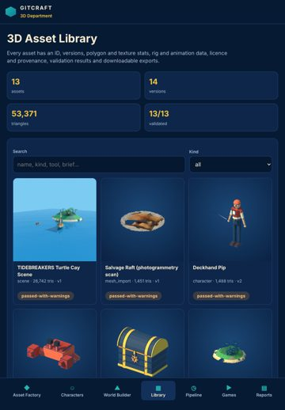
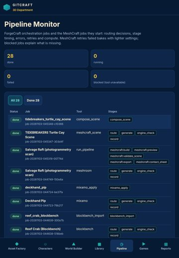

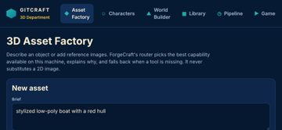
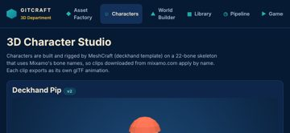
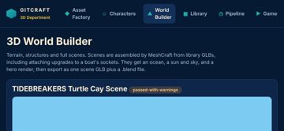
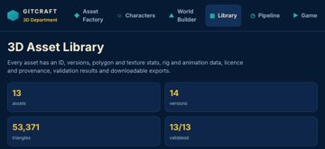
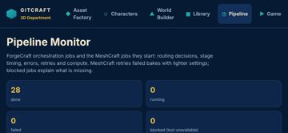
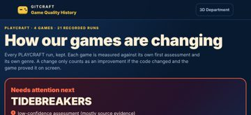
10 · Prioritised improvement plan
| # | Tier | Fix | Severity | Seen | Cost |
|---|---|---|---|---|---|
| 1 | fix now | Uneven spacing between related elements Give the container one gap (flex/grid `gap`, or one margin rule for all items) instead of per-item margins. | major | 4× | low |
| 2 | next | The same heading level has different sizes on different screens Style headings once, globally, from the type scale. | minor | 6× | low |
| 3 | next | Two primary actions compete Keep one filled primary button per group; make the other secondary (outline or tonal). | minor | 3× | low |
| 4 | polish | Too many button variants Define 2-3 button sizes and 3 emphasis levels (primary, secondary, tertiary) as one component and use it everywhere. | minor | 2× | medium |
| 5 | polish | No hover state Add a hover style (tone shift, underline, elevation) for every interactive component variant. | minor | 1× | low |
| 6 | polish | Lines of text are too long Cap text columns at 60-75ch (max-width: 70ch). | minor | 1× | low |
Journeys
| Journey | Viewport | Result | Taps | Confirmations | Feedback ms |
|---|---|---|---|---|---|
| reach characters auto | iphone17 | ok | 1 | 0 | 119 |
| reach world-builder auto | iphone17 | ok | 1 | 0 | 141 |
| reach library auto | iphone17 | ok | 1 | 0 | 149 |
| reach pipeline auto | iphone17 | ok | 1 | 0 | 118 |
| reach games auto | iphone17 | ok | 1 | 0 | None |
| reach characters auto | desktop | ok | 1 | 0 | 114 |
| reach world-builder auto | desktop | ok | 1 | 0 | 135 |
| reach library auto | desktop | ok | 1 | 0 | 144 |
| reach pipeline auto | desktop | ok | 1 | 0 | 115 |
| reach games auto | desktop | ok | 1 | 0 | None |
Before / after
Comparable: yes — same method, same screens, viewports and journeys; deltas use only metrics measured in both runs
| Before | After | Δ (same metrics) | |
|---|---|---|---|
| Visual Quality | 74.8 | 92.5 | +17.7 |
| Usability | 82.1 | 95.7 | +13.6 |
| Consistency | 50.7 | 64.2 | +13.5 |
| Overall | 69.2 | 84.1 | +14.9 |
Resolved 15 · persisting 6 · new 0 · regressions 0 · coverage lost: spacing.evenness (home @ landscape), spacing.evenness (home @ tablet)
- ✅ Text is too small to read comfortably
- ✅ Touch target is too small
- ✅ Focusing a field zooms the page on iPhone
- ✅ Controls are too close together
- ✅ No pressed (active) state
- ✅ Text is truncated
- ✅ Text is cramped against the edge of its box
- ✅ Clickable element is not a real control
- ✅ Spacing does not follow a consistent scale
- ✅ Buttons side by side have different heights
- ✅ Main action is at the top of the phone screen
- ✅ Click target is below 24 px
- ✅ Accessibility: Scrollable region must have keyboard access
- ✅ Controls stretch across the desktop window
- ✅ Content disappears at one screen size
Generic design tells (advisory, not scored)
Defaults unguided builds reach for, read from the rendered page. Each is a question, not a defect: the project's own art direction wins. Accept a deliberate one with accept_tells.
- Thick coloured stripe on one side — 6× on home. A 3 px+ coloured border down one edge of cards, list items or alerts is a template habit. Ask: Mark state or category with an icon, a label or the surface colour; if a stripe is part of the identity, accept it.
div.routetemplate · A MeshCraft template fits: deterministi · home @ iphone17 - Cards nested in cards — 57× on characters, home, library, pipeline, world-builder. A padded, rounded, bordered box inside another one adds frames without adding structure. Ask: Flatten the inner level: separate with spacing, a divider or a heading instead of a second container.
p.noteClick to inspect. Regenerate from the Library to c · home @ iphone17p.noteMixamo has no public API, so ForgeCraft never cont · characters @ iphone17p.notePick library assets. Upgrades attach to the first · world-builder @ iphone17 - Emoji standing in for icons — 162× on characters, home, library, pipeline, world-builder. Emoji render differently on every platform and never match the interface's stroke, weight or palette. Ask: Use one drawn icon set (authored SVG in the project's style, e.g. made with VectorCraft) at one stroke weight.
a☺ Characters · home @ iphone17a▶ Games · home @ iphone17a.on☺ Characters · characters @ iphone17 - Eyebrow label above a heading — 6× on games. A small tracked-out uppercase kicker over every heading is a template rhythm, and the heading usually says it already. Ask: Delete the label and let the heading carry the section; keep a label only when it carries information the heading does not.
div.eyebrowPLAYCRAFT · 4 GAMES · 21 RECORDED RUNS · games @ iphone17 - One default sans for everything — 30× on characters, home, library, pipeline, world-builder. Nearly all text is set in a default UI face (Inter, Roboto, Arial, the system font): no typographic voice of its own. Ask: Choose a display face that belongs to the product's world and pair it with a readable text face; keep the default only if the identity calls for it.
body· home @ iphone17
Evidence and limits
- Every viewport is browser emulation (Playwright + Chromium 153.0.8010.12); iPhone sizes are CSS pixels and safe-area insets are emulated through CDP (Emulation.setSafeAreaInsetsOverride). Safari-specific rendering (WebKit), the real on-screen keyboard and physical reach are not reproduced.
- Browser chrome: the first screen is re-measured with the viewport shortened by 120 px (Safari's toolbars); dynamic toolbar collapse is not reproduced.
- Keyboard interference: fields that would zoom on focus (font-size < 16 px) are measured; whether the on-screen keyboard covers a field is not testable in emulation.
- Hover/pressed/focus states are sampled once per visual variant of control; focus visibility comes from real Tab presses (desktop).
- Canvas-drawn interfaces (games): the DOM does not describe what is drawn, so DOM-geometry metrics cover only the HTML overlay (HUD, menus); use judgements for the canvas.
- No physical-device evidence: findings are emulation results, not device results.